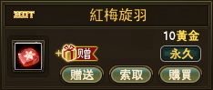
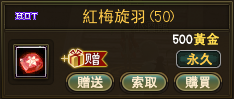
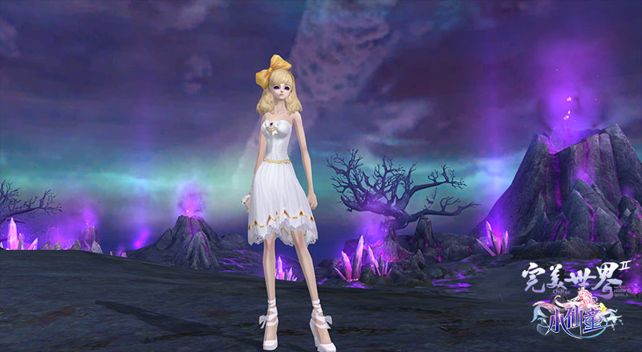
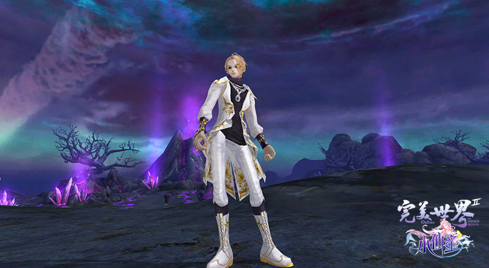
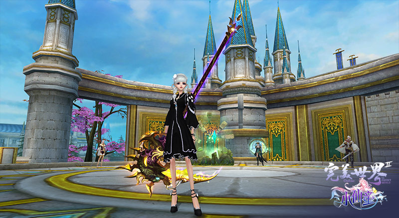
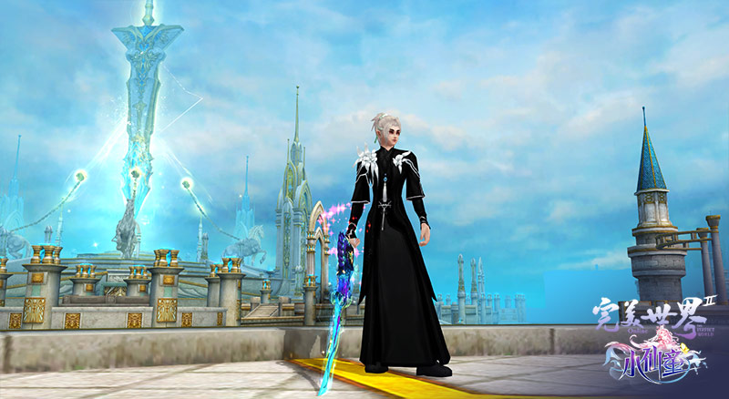
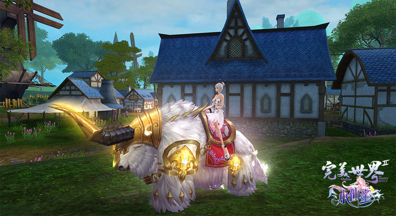

《 完美世界 2 》2020 年 11 月 04 日推出全新彩票【 紅梅旋羽 】商城售價為 10 元，組合包 50 個一組 500 元！
購買 1 個【 紅梅旋羽 】加贈 1 個【 煙花巷陌 】彩票。馬上來觀看這期的商品精彩內容。
購買 1 個【 紅梅旋羽 】加贈 1 個【 煙花巷陌 】彩票。馬上來觀看這期的商品精彩內容。
★ 全新彩票商品如下 ： ( 熱銷商品-新品 )

( 限時上架時間：小仙童改版開機後 ~ 2020/11/25 (三) 08:00 下架 )
|  |  |
【 紅梅旋羽 】開啟後將隨機獲得以下一樣物品。( 商品下架時間為 2020/11/25 (三) 08:00 下架 )
| 名稱 | 數量 | 說明 |
| 五銖錢 | 1 | 可於商城專員助手進行鐫刻屬性，或兌換為完美．上簽(15)。 |
| 完美•上上簽 | 1 | 可向完美商城專員兌換道具。 |
| 星魂百納丹•極 | 5 | 蘊含強大的星魂之力，可通過星噬操作被星盤吞噬。可被等級低於 70 級的星盤吞噬，提供星盤經驗：10。 |
| 紅梅傲雪•傳說碎片 | 1 | 死亡保護，收集1500個可在商城專員助手 旺財處合成1個紅梅傲雪·傳說龍匣。 紅梅傲雪•傳說龍匣右鍵點擊打開隨機獲取以下道具之一：九夢瑯環魄、寂照犀變、伏誅月石、碧海玄章 |
| 銜歡鈴 | 1 | 死亡保護。可在城北錦衣仙子 銜歡處用＂點石成金＂制造出時裝錦盒。如不滿意，可用已有的時裝錦盒進行二次制造。 |
| 叢林之石 | 3 | 此道具可用於鑄造和錘煉＂叢林之眼＂，將＂叢林之眼＂拆分也可以獲得一定數量的＂叢林之石＂。 |
| 赤眼之石 | 1 | 《點我觀看內容》 |
| 軒轅之石 | 1 | |
| 蒼茫之石 | 1 | |
| 海藍之石 | 1 | |
| 女媧之石 | 1 | |
| 百障之石 | 1 | 飾品專屬魂石，可以融合到 12 品及更高的飾品上。鑲嵌效果：防禦等級+1。 |
| 夜叉之石 | 1 | 飾品專屬魂石，可以融合到 12 品及更高的飾品上。鑲嵌效果：攻擊等級+1。 |
| 金剛之石 | 1 | 《點我觀看內容》 |
| 盤甲之石 | 1 | |
| 1 品月之流晶禮包 | 1 | 右鍵點擊使用，可獲得1品月之流晶(隨機色)。 |
| 沉睡的聖裁之魂(頭盔) | 1 | 品階 3，喚醒後才能使用。 Ctrl+左鍵單擊，可呼出操作界面，可融合部位：頭盔，可拆分為：靈魂碎片*30，最高月相品階：5。 |
| 戰歌統帥徽章 | 1 | 可製作 14 品腰佩。 |
| 魔方董事會印章 | 1 | 可製作 14 品項鍊。 |
| 隻手遮天 | 1 | 15 品戒指。 |
| 覆手翻雲 | 1 | 15 品戒指。 |
| 渾天塵降•惜珍 | 1 | 在渾天塵降•塑靈處使用一定數量，可對浴火重生後的八軍裝備進行升級操作。《點我觀看內容》 |
| 渾天塵降•仰尊 | 1 | 可在祖龍城【 白帝使者 玉雪傾城 】處使用此物將比武大會冠軍面甲升級為蜃神境冠。 亦可在【 玉墟金仙 洞玄 】處使用此物直接生產蜃神境冠。《點我觀看內容》 |
| 渾天塵降•至尊 | 1 | 可在祖龍城北【 飛升之鼎 】處使用此物將新八軍防具升級為至尊軍功榮譽裝備。《點我觀看內容》 |
| 4 級符紋禮包 | 1 | 右鍵點擊使用，可獲得 1 個隨機 4 級符紋。 |
| 7 級符紋禮包 | 1 | 右鍵點擊使用，可獲得 1 個隨機 7 級符紋。 |
| 無雙之翼 | 1 | 可升級為 16 品披風。《點我觀看內容》 |
| 天命之書 | 1 | 可兌換五級天書。 |
| 天神之卷 | 1 | 可兌換七級天書。 |
| 碧海玄章 | 1 | 天書精煉時能加入會產生神奇的效果。1-10 級天書精煉 100% 成功。僅用於天人合一裝備。 |
| 太上之靈 | 1 | 擁有強大的初始技能“神元訣”，而且初始能力皆為 10 且成長度固定為 100 ！助您輕輕鬆松培養滿屬性的黃金精靈。交易狀態：交易保護。 |
| 六轉指玄珠 | 1 | 可將 15 品戒指升級為 16 品戒指 |
| 降世之冠 | 1 | 16 品頭盔。《點我觀看內容》 |
| 伏誅月石 | 1 | 可用此物在黃昏‧化形之鼎處兌換以下頭盔中的一件。獅心王重盔‧不屈、影修羅輕盔‧無畏、通天者法冠‧正氣。亦可用此物在黃昏‧傳承之鼎處將原有降世之冠、凌霄之冠或八軍頭盔生產為上述頭盔。 |
| 寂照犀變 | 1 | 可在祖龍城玉墟金仙 洞玄處兌換 17 品項鍊玄闕奇樞環或 17 品腰佩轟霆異世璧一件。 《點我觀看內容》 |
| 九夢琅嬛魄 | 1 | 此物異常珍貴，可在白帝使者 玉雪傾城處將頂級至尊軍功戒指升級為戒指瀆世誅仙戒。 |
| 《帝王》 | 1 | 天書品階 9。力量+45、敏捷+45、靈力+45、致命一擊率+3%、吟唱時間-5%、攻擊間隔-0.05秒、移動速度+0.2米/秒、生命值+400。 |
| 神翼‧旋羽閬風 | 1 | 人族飛行器：搖雪菱光、妖族飛行器：翠羽靈雀、羽族飛行器：藍空之羽、汐族飛行器：冰藍之觸、靈族飛行器：幻夢藍晶、朧族飛行器：瑰色冰輪 《點我觀看內容》 |
| 蝴蝶結淑女裝禮包 | 1 | 女性專用時裝，右鍵點擊打開，獲得的時裝顏色固定，可以染色。 |
| 古典學者男裝禮包 | 1 | 男性專用時裝，右鍵點擊打開，獲得的時裝顏色固定，可以染色。 |

蝴蝶結淑女裝

古典學者男裝
【 煙花巷陌 】購買紅梅旋羽加贈【 煙花巷陌 】彩票，開啟後將隨機獲得以下一樣物品。
| 名稱 | 數量 | 說明 |
| 五銖錢 | 1 | 可於商城專員助手進行鐫刻屬性，或兌換為完美．上簽(15)。 |
| 完美•上上簽 | 1 | 可向完美商城專員兌換道具。 |
| 鬼斧徽記 | 1 | 在完美商城專員處進行飾品打孔的神奇道具。 |
| 星魂百納丹•極 | 1 | 蘊含強大的星魂之力，可通過星噬操作被星盤吞噬。可被等級低於 70 級的星盤吞噬，提供星盤經驗：10。 |
| 神秘籌碼箱 | 1 | 裝有 1000 個神秘籌碼的大箱子。 |
| 盤甲之石 | 1 | 《點我觀看內容》 |
| 金剛之石 | 1 | |
| 盤古之石 | 1 | 可以融合到 12 品及更高的裝備上, 武器效果：體質+12、防具效果：體質+12。 |
| 赤眼之石 | 1 | 《點我觀看內容》 |
| 軒轅之石 | 1 | |
| 海藍之石 | 1 | |
| 女媧之石 | 1 | |
| 星辰之石 | 1 | 充滿神秘能量的飾品專屬魂石，可以融合到 12 品及更高的飾品上。鑲嵌效果：氣魄+25。 |
| 百障之石 | 1 | 飾品專屬魂石，可以融合到 12 品及更高的飾品上。鑲嵌效果：防禦等級+1。 |
| 夜叉之石 | 1 | 飾品專屬魂石，可以融合到 12 品及更高的飾品上。鑲嵌效果：攻擊等級+1。 |
| 天命之書 | 1 | 可兌換五級天書。 |
| 天神之卷 | 1 | 可兌換七級天書。 |
| 凌墟．天玄骨碎片小禮包 | 1 | 右鍵點擊使用。可以獲得凌墟．天玄骨碎片。可於不明人 雲野處兌換/生產17品武器的材料。 |
| 凌墟•八覺髓 | 1 | 可於不明人 雲野處兌換 17 品武器生產材料。死亡保護。 |
| 君之印綬 | 1 | 可將 16 品武器或九軍裝備/武器升級的材料。 |
| 渾天塵降•惜珍 | 1 | 在渾天塵降•塑靈處使用一定數量，可對浴火重生後的八軍裝備進行升級操作。《點我觀看內容》 |
| 渾天塵降•仰尊 | 1 | 可在祖龍城【 白帝使者 玉雪傾城 】處使用此物將比武大會冠軍面甲升級為蜃神境冠。 亦可在【 玉墟金仙 洞玄 】處使用此物直接生產蜃神境冠。《點我觀看內容》 |
| 沉睡的聖裁之魂(頭盔) | 1 | 品階 3，喚醒後才能使用。Ctrl+左鍵單擊，可呼出操作界面，可融合部位：頭盔，可拆分為：靈魂碎片*30，最高月相品階：5。 |
| 沉睡的聖裁之魂包(鞋子) | 1 | 品階3，喚醒後才能使用。Ctrl+左鍵單擊，可呼出操作界面，可融合部位：靴子，可拆分為：靈魂碎片*30，最高月相品階：5。 |
| 沉睡的聖裁之魂包(上衣) | 1 | 作界面，可融合部位：上衣，可拆分為：靈魂碎片*30，最高月相品階：5。 |
| 1 品月之流晶禮包 | 1 | 右鍵點擊使用，可獲得 1 品月之流晶 (隨機色)。 |
| 生靈刻刀 | 1000 | 在各個傳統的鐫刻NPC處選擇“高級鐫刻”選項，即可為項鍊、腰佩、戒指、披風、頭盔等裝備進行屬性鐫刻。在鐫刻的過程中，可在原有屬性和新屬性之間自由選擇保留，不用擔心當前的最佳屬性被替換。 |
| 伏誅月石 | 1 | 可用此物在黃昏‧化形之鼎處兌換以下頭盔中的一件。獅心王重盔‧不屈、影修羅輕盔‧無畏、通天者法冠‧正氣。亦可用此物在黃昏‧傳承之鼎處將原有降世之冠、凌霄之冠或八軍頭盔生產為上述頭盔。 |
| 碧海玄章 | 1 | 天書精煉時能加入會產生神奇的效果。1-10 級天書精煉 100% 成功。僅用於天人合一裝備。 |
| 寂照犀變 | 1 | 可在祖龍城玉墟金仙 洞玄處兌換 17 品項鍊玄闕奇樞環或 17 品腰佩轟霆異世璧一件。 《點我觀看內容》 |
| 太上之靈 | 1 | 擁有強大的初始技能“神元訣”，而且初始能力皆為 10 且成長度固定為 100 ！助您輕輕鬆松培養滿屬性的黃金精靈。交易狀態：交易保護。 |
| 4 級符紋禮包 | 1 | 右鍵點擊使用，可獲得 1 個隨機 4 級符紋。 |
| 7 級符紋禮包 | 1 | 右鍵點擊使用，可獲得 1 個隨機 7 級符紋。 |
| 六轉指玄珠 | 1 | 可將 15 品戒指升級為 16 品戒指 |
| 無雙之翼 | 1 | 可升級為 16 品披風。《點我觀看內容》 |
| 降世之冠 | 1 | 16 品頭盔。《點我觀看內容》 |
| 湘妃淚女裝禮包 | 1 | 女性專用時裝，右鍵點擊打開，獲得的時裝顏色固定，可以染色。 |
| 青琅軒男裝禮包 | 1 | 男性專用時裝，右鍵點擊打開，獲得的時裝顏色固定，可以染色。 |
| 九幽獓騎寵蛋 | 1 | 移動速度(米/秒) 10:00。最高移動速度(米/秒) 11:00。要求等級20。寵物最高等級 11。可以到各城寵物管理員處孵化新品騎寵：九幽獓騎寵。 |

湘妃淚女裝

青琅軒男裝

九幽獓騎寵蛋
『 頁面說明僅供玩家參考使用，一切設定請以遊戲內實際內容為主。 』